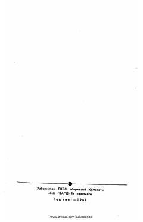

IIJahon adabiyotining mashhur namoyandalaridan tanlangan ta'sirchan novellar to'plami.
Mazkur to'plamga jahon adabiyotining taniqli namoyandalari Migel de Servantes, Alfred de Myusse va Bojena Nemsovaning tanlangan novellalari kiritilgan. Kitobda insoniy tuyg'ular, muhabbat iztiroblari va hayotiy kechinmalar ta'sirchan tarzda ochib berilgan. Asarlar Nurbek tomonidan o'zbek tiliga tarjima qilingan.